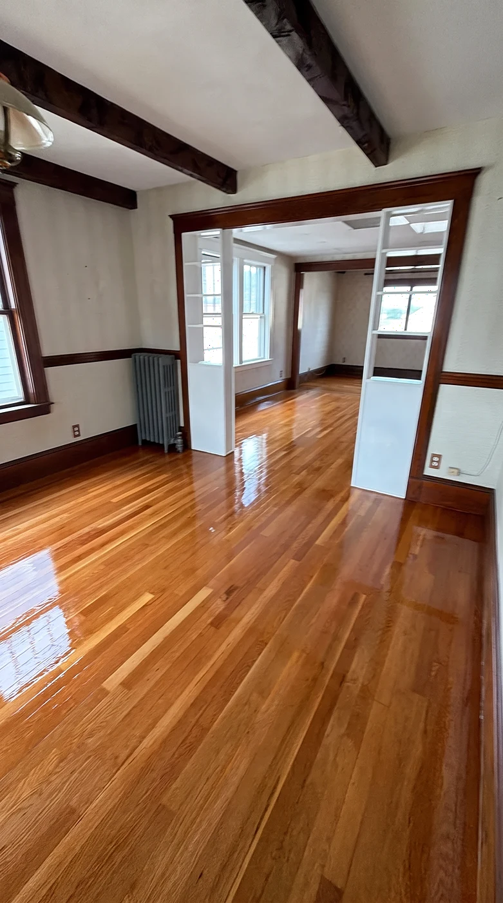

Condo and triple-decker floors in Somerville sanded, refinished, and handed back clean, with a crew that plans around stairs, neighbors, and building rules.
Call (978) 754-8751 Get a Free EstimateHardwood floor refinishing in Somerville MA is rarely just about the floor. It is about getting heavy sanders up a narrow triple-decker staircase, keeping dust out of the unit next door, working inside the hours your condo association allows, and finishing on the date you need. Most Somerville homes still have their original solid hardwood, and it refinishes beautifully. We plan the building side of the job as carefully as the wood side, give you a clear cost up front, and leave the stairwell as clean as we found it.
A recent JPN refinishing job: the finish coat going down on a freshly sanded floor.
The triple-deckers and two-family houses around Spring Hill, Winter Hill, Ball Square, and Magoun Square were mostly built with narrow-strip oak in the front rooms and softer wood such as pine or fir in kitchens, back rooms, and top floors. Many of those buildings have since been converted into condos, and the conversion work often left its own marks: patches where walls moved, new boards that do not quite match the old, and finish that was rushed to get units on the market. Newer buildings around Assembly Square tend to have engineered floors instead, which can sometimes be refinished and sometimes only recoated. We check which one you have before we quote.
A third-floor unit in a Somerville triple-decker is a different job from a ground-floor house. Drum and edge sanders are heavy, finish products have to come up the same stairs, and dust control matters more when there is a family on the other side of the wall. We map the route in and out, protect the stairs and railings on the way up, and use dust-contained equipment so the common hallway does not end up coated in fine powder. If your street has tight parking, we talk about where the truck goes at the estimate, not on the morning of the job.
Not every Somerville triple-decker is a condo. Plenty are still owned as one building, with the owner living on one floor and renting the others. If that is you, refinishing works best as a plan rather than a one-off. We can do the vacant unit now, the hallway and back stairs when it makes sense, and the other units as leases turn over, keeping a record of the stain and finish so every floor in the building matches. We price each unit and each shared space as its own line, so you can spread the cost over time without losing track of what is left.
Refinishing is priced by the square foot, the condition of the wood, and the finish you choose. These are typical Greater Boston ranges to help you budget a condo or unit; your documented estimate is written for your floor and your building.
| What affects the price | Typical range |
|---|---|
| Standard refinishing (sand + finish) | $3 to $5 per sq ft |
| Refinishing with a custom stain color | $4 to $7 per sq ft |
| Heavy repairs, water damage, or lots of patching | Added per the estimate |
| Stairs (priced separately, more hand work) | $40 to $75 per step |
Ranges are for planning only. If a lighter recoat will do the job, we will tell you and price that instead. Every line is written into the estimate, and the price you approve is the price you pay.
Not every worn floor needs a full sand. Here is how to tell what yours needs:
Most condo and single-unit jobs run two to four working days plus cure time, depending on size, repairs, and the finish you pick.
You will need somewhere else to be for part of the job if the whole unit is being done at once. In larger units we can sometimes work in sections so you keep a usable room.
Water-based finish has low odor and dries faster, which is often the better fit in a building where neighbors share air and stairwells. We confirm the schedule and walk-on times before we start.
In a dense city, a bad floor job can cause trouble with your neighbors and your association, not just your floor. Watch for these:
In Somerville we work with condo associations, landlords, property managers, and builders renovating older buildings, as well as individual owners.
We stick to agreed dates, work within building rules, keep common areas clean, and document every unit on video, so managers and developers can show exactly what was done.
Every JPN job is dust-contained, delivered on the schedule we agreed to, and priced from a documented estimate, so the number you approve is the number you pay.
We film the work from bare wood to final coat and we are not done until you have walked the finished floor with us, and the stairs and hallways are clean.
Many Somerville floors were refinished when the building was converted to condos or when the unit was last sold. If that finish is now dull and scuffed but the wood under it is still clean, you may not need a full sand at all. A screen-and-recoat lightly abrades the existing finish and adds a fresh coat. It is faster, quieter, less dusty, and costs noticeably less.
A full refinish is the right choice when scratches have reached the wood, when there are stains or gray worn lanes, or when you want a different color. A recoat cannot fix any of those things, and it will not stick properly over wax or certain old finishes.
At the estimate we look closely at the floor and tell you which one makes sense. In a building where noise and dust are a concern, choosing a recoat when it truly works is often the smartest move for you and your neighbors.
One more thing to know: a recoat only works on a floor that is clean of wax, oil soap residue, and most furniture polishes. If your floor has been cleaned with those products for years, the new coat may not bond. We test for that before recommending a recoat, so you do not pay for a finish that peels.
The base price is the square footage times the type of work: about $3 to $5 per square foot for a standard refinish and about $4 to $7 with a custom stain. On top of that, the condition of the floor matters most. Old patches, water damage near kitchens and bathrooms, and pet stains all add repair time.
Stairs are priced per step, about $40 to $75, because each one is sanded and finished largely by hand. In a condo where your unit includes a private staircase, that is often a meaningful part of the total.
Building access can matter too. A third-floor unit with a narrow staircase or tight parking takes more planning than a ground-floor job. We write every one of these items into the estimate as its own line, so you can see where the money goes and decide what to do now.
What usually does not change the price much is the size of the rooms themselves. A compact condo with one living room and two bedrooms is often a quicker job than people expect. The bigger cost drivers are repairs and stairs, which is why we look at both closely at the estimate instead of quoting over the phone.
Most Somerville condo buildings are small associations, often just two or three units, and the rules are usually simple: keep work to set hours, keep common areas clean, and let the other owners know what is coming. Larger buildings may have written policies and a manager to coordinate with.
Before we start, ask your association what it requires and share it with us. Common requests include proof of insurance, a set start and end time each day, and protection for shared stairs and floors. JPN is insured and used to working inside these limits.
We also suggest giving your neighbors a short heads-up with the dates of the noisy sanding days. In a triple-decker, a little notice goes a long way.
Water-based finish is often the first choice in Somerville condos. It has low odor, dries quickly, and keeps the wood light and natural, which suits the bright, modern look many owners want after a renovation. Today's commercial-grade water-based finishes are also very durable.
Oil-based finish gives a warmer amber tone and is very tough, but it smells more and takes longer to cure. In a building where neighbors share a stairwell and heating, that odor and cure time are worth thinking about.
We apply two or three coats with a buff between each, whichever finish you choose. We explain the trade-offs on site and let you decide based on how your household lives and how your building works.
Many Somerville units have limited natural light, especially lower floors on narrow streets. A stain that looks great on a sample board can feel much darker in a room that only gets light from one side. That is why we always test the color on your own sanded floor.
We put down a few test patches, look at them in daylight and again in the evening, and only then commit. Lighter and natural tones tend to make a compact condo feel bigger, while darker tones can look sharp but show dust and scratches more easily.
If your unit has original trim or a staircase that will stay as is, we choose a color that works with it, so the floor and the woodwork look like they belong together.
In a competitive market like Somerville, freshly refinished hardwood is one of the first things buyers and renters notice in photos and at showings. If the floor is solid and sound, refinishing usually costs far less than replacing it and gives the unit a clean, cared-for look.
Timing matters. Floors should usually be done after painting and other work is finished, and before photos are taken. If you have a listing or move-in date, tell us at the estimate and we build the schedule backward from it.
For landlords, a recoat between tenants is often enough to keep a unit looking good and to push the next full refinish years down the road.
JPN is based in neighboring Medford and is run by Janderson Francisco. When you call, you reach the people who will actually do the work, and we can usually get out quickly for the estimate.
We are full-service, so if we find a damaged board, a subfloor problem, or stairs that need work, one accountable crew handles it. We are insured, our sanding is dust-contained, and every estimate is documented line by line.
We also film each job from bare wood to final coat. For owners who are not living in the unit, or associations that want a record of the work, that video shows exactly what was done.
Somerville borders Medford, a short drive from our base, so we can get to Davis Square, Union Square, Winter Hill, or Assembly Square for an estimate without a long wait, and we already know how to work in tight, occupied buildings. We work throughout Davis Square, Union Square, Teele Square, Ball Square, Spring Hill, Winter Hill, Magoun Square, and Assembly Square. Somerville is one of the densest cities in New England, built largely of triple-deckers and two-family houses from the late 1800s and early 1900s, many of them now converted into condominiums, alongside newer apartment and condo buildings, so we know the floors under these homes and how to bring them back or build them new.
Real floors from JPN projects across Medford and Greater Boston, done right, on time, and dust-free.
Founded and run by Janderson Francisco, JPN is a full-service hardwood flooring company based in Medford. Every estimate is documented line by line, every job is dust-contained, and we film our work from bare wood to final coat so you see exactly what you paid for.
Get your free estimateReal homeowners and builders across Greater Boston, straight from our Google Business Profile.
I had an excellent experience with JPN Hardwood Floors! Their team was professional, punctual, and paid close attention to every detail. The quality of their work exceeded my expectations, and the floors turned out absolutely beautiful. They kept everything clean and completed the project on time. I highly recommend them to anyone looking for reliable, high-quality flooring services. Five stars!
We've been working with JPN Hardwood Floors for a long time, and they consistently do an excellent job. Their entire team is professional, reliable, and takes great pride in their work. The quality of their hardwood flooring work is always great, and they are great to work with. We highly recommend them to anyone looking for a trustworthy and skilled hardwood flooring company!
I'm impressed by the excellence of the work delivered. You can truly see the care and professionalism in every detail.
Amazing work! Professional, reliable and highly recommend!
Very attentive, has great prices, and the work is simply impeccable. Thank you very much!
A clean home when we're finished and the completion date we quoted, or we make it right. Licensed, fully insured, and serving Medford, MA within 100 miles.